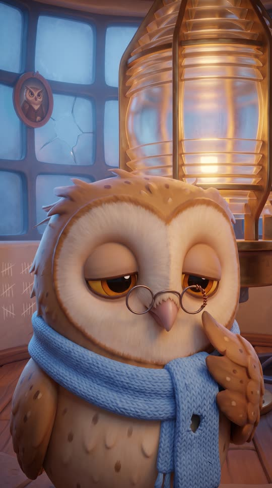
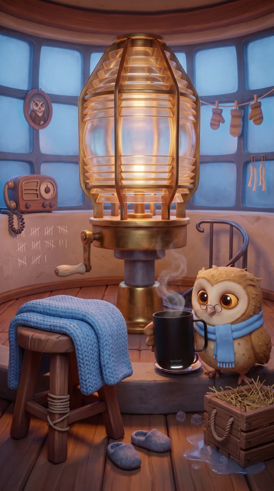
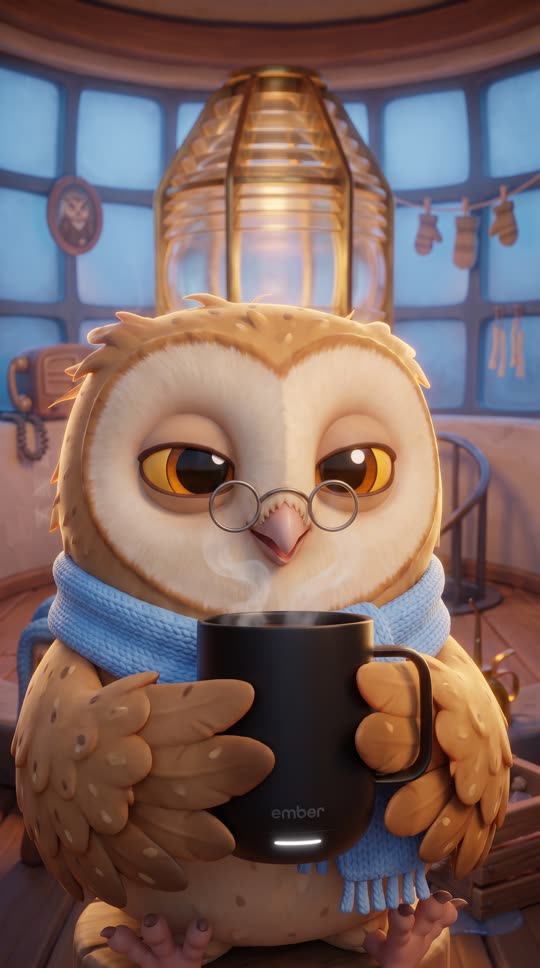
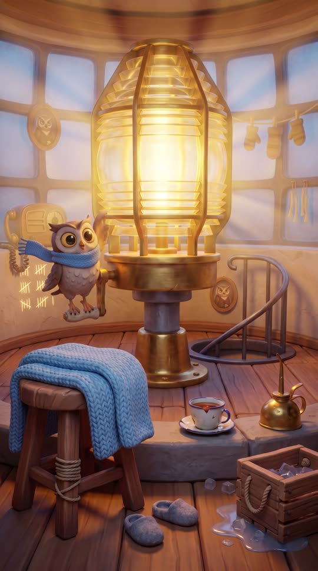
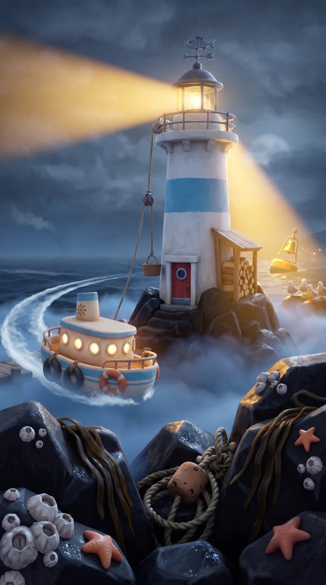
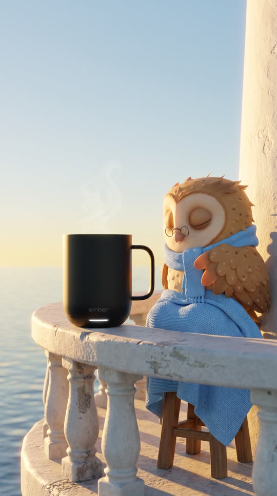

The Night Owl, 30 seconds, rewritten
Script (61 words, about 29 s)
| Narrator (voiceover) | On the coldest, foggiest night of the year, Mabel keeps watch alone. |
| Teo | Point Hollow, I can't see a thing. Are you there? |
| Mabel | I'm here, Teo! Hold on. |
| Narrator (voiceover) | Long nights call for warm tea, so Mabel keeps hers in an Ember Mug, set to the exact temperature she likes. |
| Teo | I see your light! Thank you, Mabel. |
| Narrator (voiceover) | Ember Mug 2, for long nights. |
Gate: 61 words against a budget of 64; judge scores listen-only 9, conversational 9, product line 8, product fit 10 (pass is 8 or higher on each).
What changed from the first version
- A warm storyteller narrator (ElevenLabs voice Juniper at a calm 2.3 to 2.6 words per second) carries the story as a separate voiceover, so the brand is always said correctly and never depends on the video model.
- Every line is a full sentence that makes sense with the screen off. Characters only talk to each other.
- The product changed from the lip balm to the Ember Mug: a balm on an owl's beak does not make sense, while warm tea on a cold night watch does. The template now rates applied products as a stretch.
The first version's lines, for comparison
| Mabel | Stay awake, Mabel. One more ship. |
| Teo | Point Hollow, we're blind out here. You there? |
| Mabel | I'm here! I'm here! |
| Mabel | Summer Fridays. Instant moisture, even out here. |
| Teo | I see your light! Turning now. |
| Mabel | Safe home, Marigold. |
| Mabel | Soft lips, bright light. |
Storyboard (keyframes used for this cut)

S01 · 0 to 3 s
Mabel alone in the lamp room, eyes drooping
Narrator: On the coldest, foggiest night of the year,

S02 · 3 to 6 s
The lighthouse in rolling fog, the ferry lost
Narrator: ...Mabel keeps watch alone.

S03 · 6 to 9.5 s
Captain Teo at the wheel, radio in hand
Teo: Point Hollow, I can't see a thing. Are you there?

S04 · 9.5 to 12 s
Mabel jolts awake and grabs the radio
Mabel: I'm here, Teo! Hold on.

S05 · 12 to 15.5 s
She lifts her steaming Ember Mug from the crate
Narrator: Long nights call for warm tea,

S06 · 15.5 to 20 s
A warm sip, eyes closed with relief
Narrator: ...so Mabel keeps hers in an Ember Mug, set to the exact temperature she likes.

S07 · 20 to 23 s
She hangs off the crank, the lens blazes gold

S08 · 23 to 27 s
The beam cuts the fog, the ferry turns to safety
Teo: I see your light! Thank you, Mabel.

S10 · 27 to 31 s
Sunrise: the mug on the ledge, Mabel asleep
Narrator: Ember Mug 2, for long nights.